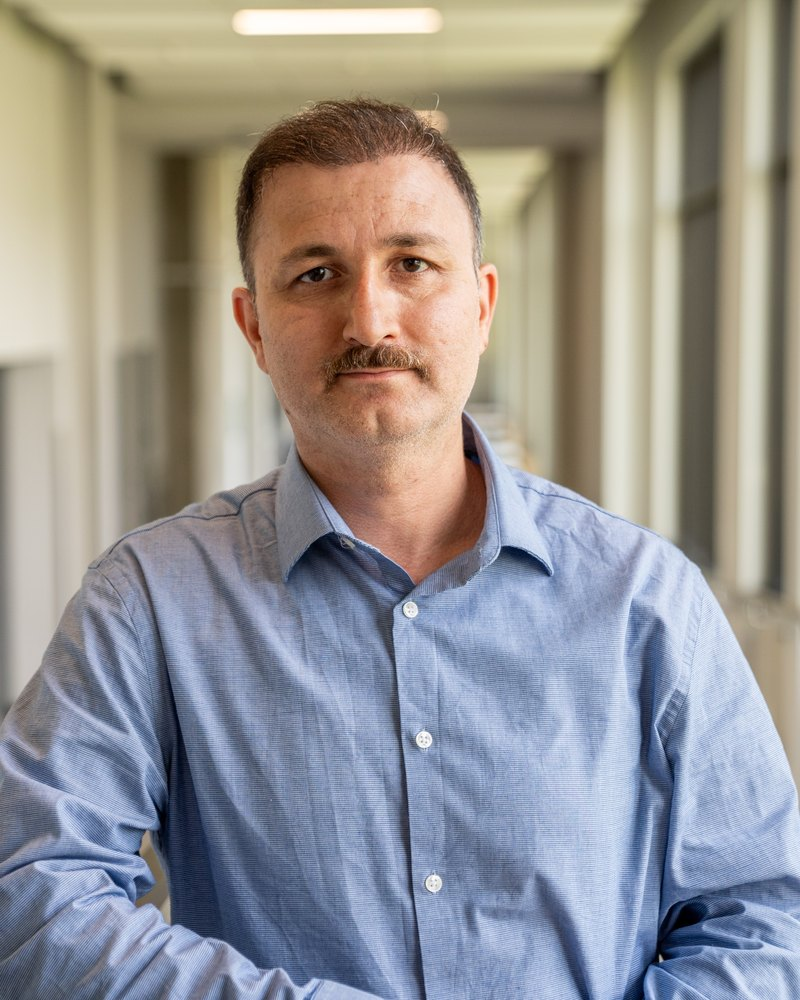

People / Principal investigator

Reza Najafi
Professor, Department of Civil and Environmental Engineering, Western University
Director, HydroClimEX Lab
Cofounder and co-director, Centre for Multihazard Risk and Resilience
PhD, P.Eng. Associate Editor, Water Resources Research (AGU) and Weather and Climate Extremes
Biography
Reza Najafi is a Professor of Civil and Environmental Engineering at Western University, where he leads the Hydroclimate Extremes and Climate Change Lab. His research addresses nonstationary hydroclimatic extremes, compound and cascading hazards, and the risk they pose to infrastructure under climate change.
Before joining Western in 2017 he was a postdoctoral fellow and research scientist at the Pacific Climate Impacts Consortium, University of Victoria, and a postdoctoral researcher at the Byrd Polar Research Center, Ohio State University. He received his PhD from Portland State University in 2013, and earlier worked as a water resources engineer.
He has authored about 80 peer-reviewed journal articles and supervised more than 40 graduate students and postdoctoral fellows. He is a co-lead author of the water cycle chapter of Canada's Changing Climate Report 2026, and co-founded Western's Centre for Multihazard Risk and Resilience, which brings together about 20 faculty members across three faculties.
Appointments
- 2026
- Professor, Western University
- 2022
- Associate Professor, Western University
- 2017
- Assistant Professor, Western University
- 2015
- Research Scientist, Pacific Climate Impacts Consortium
- 2013
- Postdoctoral Fellow, Pacific Climate Impacts Consortium; Postdoctoral Researcher, Byrd Polar Research Center
Education
- 2013
- PhD, Civil and Environmental Engineering, Portland State University
- 2007
- MSc, Civil Engineering, K.N. Toosi University of Technology
- 2004
- BSc, Civil Engineering, Shahid Beheshti University
Selected honours
- Faculty Scholar Award, Western University, 2026 to 2028
- Top 10% most-read article, International Journal of Climatology, 2026
- JSPS Invitational Fellowship, Kyoto University, 2025 to 2026
- Ontario Engineering Project Award, academic partner for the York Region flood risk model, 2025
- Ontario Early Researcher Award, 2024
- Best Technical Paper Award, ASCE Journal of Hydrologic Engineering, 2017
Service and leadership
- Associate Editor, Water Resources Research (AGU)
- Associate Editor, Weather and Climate Extremes
- Co-lead author, Canada's Changing Climate Report 2026, Chapter 5
- Cofounder and co-director, Centre for Multihazard Risk and Resilience
- Contributor, ASCE compound flooding manual of practice and the CSA W224 implementation guide
Selected keynotes and invited talks
Characterizing compound hydroclimatic extremes and flood risk under climate change, Disaster Prevention Research Institute, Kyoto University
Compound flood and drought hazards in a changing climate, WaterTalks, Water Institute, University of Waterloo
Climate-driven cascading risks, Global Congress on Climate Change, Berlin (keynote)
Dynamic risk assessment of critical infrastructure networks, World Summit on Engineering and Civil Infrastructure, Rome (keynote)
Dynamic assessment of compound flood risks, Global Congress on Climate Change, Lisbon (keynote)